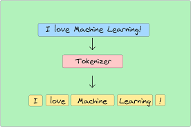

Natural Language Processing
By Anika G
Peer-reviewed article UNLOCKING THE POTENTIAL OF CHATGPT
NLP’s biggest, most famous application to date is ChatGPT. The platform’s popularity comes from its significant capabilities in answering questions about a broad range of fields. The article talks about how the NLP model can successfully accomplish many tasks such as multimodal analysis and integration, real-time collaboration, learning from context, etc., to provide human-like responses. It further goes on to indicate how these capabilities allow it to have a range of applications in the real world such as Visual Analysis, Image Analysis, Educational Support, Healthcare, etc. The article goes on to compare the performance of ChatGPT with other NLP models such as Meta’s LLaMA 3 and Google’s Gemini. They each improve on one of ChatGPT’s weaknesses. LLaMA 3 improves on ChatGPT’s lack of efficiency and scalability by incorporating complex algorithms that allow the platform to perform complex language tasks. Google’s Gemini is far superior at handling the ethical gaps left behind by ChatGPT. Its algorithm is geared towards bias reduction and creating a tool that upholds human morals. The article concludes talking about the scope for the future and potentially having a model that can improve upon the current limitations.
Platform JAVA
Java is a useful tool for NLP because of its versatility, efficiency and broad range of library support. It has a range of libraries specifically created to implement NLP. Apache OpenNLP, Stanford NLP, and LingPipe are a few examples. These libraries provide fundamental tools for various NLP tasks like tokenization, sentiment analysis, and named entity recognition, making the development of complex models using Java much easier. Additionally, it is also extremely scalable, which allows developers to create models that handle large datasets and seamlessly integrate big data frameworks that enable the efficient analysis of massive amounts of data. Furthermore, Java’s libraries allow developers to use complex statistical models and incorporate deep learning to create sophisticated language models that can tackle difficult NLP dilemmas. However, one of the best aspects of the platform is its easy integration with pre-trained deep learning models like BERT, GPT, and ELMo. Already trained and fit on certain data, these models drastically reduce development time for coders, who do not need to carry the burden of building complex models from scratch. These pre-trained models are robust as they can be fine-tuned to the developer’s requirements through transfer learning. Hence, due to the diversity of functionality in its libraries, Java is an excellent platform to implement Natural Language Processing in.
Platform TikTok
Social media Platforms such as Tiktok have increasingly started to use NLP in their recommendation systems. Tiktok in particular is widely known to use NLP to support its highly effective recommendation algorithm. The algorithm works by using NLP to translate and describe the audio context of each video. Once the right information is extracted, it is analyzed and classified and clustered into certain groups. After content is grouped, the Recommendation algorithm uses this information to send the video to users who watch videos that fall in the same group. While X and Instagram rely on NLP to show posts similar to users’ past interactions or from accounts they follow, their algorithms rarely explore beyond established patterns. TikTok, on the other hand, uses its NLP-driven groups to recommend videos from adjacent clusters, introducing users to new content while maintaining relevance. Hence, TikTok as a platform uses NLP like no other platform has before.
Glossary Term Tokenization
It is the process of breaking down text into smaller units. These smaller units are called tokens. These tokens can be words, phrases, or even characters depending on the model being used. An example of this is shown in the image. Here, the sentence is broken into words based on spaces by the tokenizer. This is a crucial step in NLP as it converts text into a format that algorithms can more easily analyze. This process helps algorithms understand word boundaries, punctuation, and language patterns like humans do, forming the foundation for further analysis. Approaches to tokenization vary; some methods use spaces to split tokens while more complex ones break words into meaningful segments or rare unseen words. Although in most cases, these methods are efficient, many tokenizing algorithms give rise to a few common problems. In some languages, there isn't a clear space between words, which makes creating tokens for those languages a lot harder. Hence, although a fundamental part of NLP, this process still has some challenges to be addressed.
Glossary Term Sentiment Analysis
It is a popular process in Natural Language Processing. The goal of this process is to classify text according to the mood expressed in that text. For instance, positive, neutral, or negative tones are the most common moods used for classification. This subset of Natural Language Processing is widely used by companies to improve their products and consumer satisfaction. This process works through two main sub-processes. First, the data is preprocessed - it is first tokenized, and then filtered to remove words that don’t add meaningful value to the sentence. This processed text is then further analyzed through algorithms that extract keywords from the text and give them a sentiment score based on an emotion measurement scale. Although most algorithms are very efficient at detecting a smaller range of emotions and moods such as happiness, sadness, negativity, and joy, they struggle to detect more nuanced emotions. A widely known problem for sentiment analysis is the common tendency for their algorithms to not comprehend sarcasm. Such algorithms also have problems with detecting multiple emotions in the same sentence. Hence, although promising, Sentiment analysis is a long way from being flawlessly implemented in companies.
Social/Cultural Engagement NLP Conferences
Conferences serve as an excellent way for Computer Scientists to interact with new ideas about Natural Language Processing. One of the most premier conferences held in the field is the ACL Association for Computer Linguistics) Conference. At these conferences, researchers present cutting-edge research, learn about the newest inventions, make connections and view the general trend of Natural Language Processing. Alongside the conferences, these events also typically have workshops and live tutorials for beginners in the field. These side events allow NLP novices to break into the field and make some connections along the way, and allow established researchers to further build their knowledge in the field. These conferences also serve as a unique bridge between two sectors of Computer Science - industry and academia. This is as typically, companies also attend such conferences showing their latest innovations and tools to the public, while also learning of the recent advancements from academia for future use. Overall, such conferences are crucial to the advancement of NLP as they provide researchers with a platform to learn and share ideas and keep up with the current trends in the field.
Works Cited
“TikTok vs. Instagram: Comparison.” LitCommerce, https://litcommerce.com/blog/tiktok-vs-instagram-comparison/. Accessed 18 Nov. 2024.
Gu, Xiaomin, et al. OpenAGI: When LLM Meets Domain Experts. https://arxiv.org/pdf/2304.02017. Accessed 18 Nov. 2024.
Hameed, Shariq. “NLP Basic Concepts (Part 1 of 10).” Medium, https://shariqhameed127.medium.com/nlp-basic-concepts-part-1-of-10-d626b0d2187d. Accessed 18 Nov. 2024.
“Top NLP Libraries in Java.” Baeldung, https://www.baeldung.com/java-nlp-libraries. Accessed 18 Nov. 2024.
“What Is Computational Linguistics?” ACL Web Portal, https://www.aclweb.org/portal/what-is-cl/. Accessed 18 Nov. 202en 2024.
“What Is Sentiment Analysis?” GeeksforGeeks, https://www.geeksforgeeks.org/what-is-sentiment-analysis/. Accessed 18 Nov. 2024.
“What Is Tokenization?” DataCamp, https://www.datacamp.com/blog/what-is-tokenization. Accessed 18 Nov. 2024.
Vinod, Vinod. “Java and Natural Language Processing in Building Language Models.” Medium, https://medium.com/@224vinod/java-and-natural-language-processing-in-building-language-models-e69ee8c63cb5. Accessed 18 Nov. 2024.